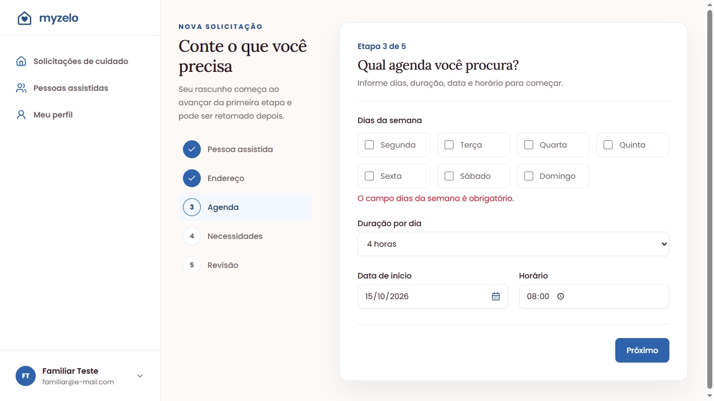

Problemas comuns, perguntas e glossário
Resolva as dúvidas mais frequentes sem perder o ponto em que você parou.
Problemas comuns
| O que aconteceu | Como continuar |
|---|---|
| Enviar solicitação está desabilitado | Confirme o e-mail e confira se todas as etapas foram salvas. Use Reenviar verificação se necessário. |
| “O campo dias da semana é obrigatório.” | Marque pelo menos um dia na etapa Agenda e clique em Próximo novamente. |
| Data de início não é aceita | Escolha hoje ou uma data futura; confira dia, mês e ano. |
| CPF inválido | Confira todos os dígitos do CPF do contratante e salve os dados fiscais novamente. |
| Não consigo autorizar pagamento | Confira dados fiscais completos, prazo ainda válido e estado Aguardando pagamento. |
| A reserva desapareceu | Se o prazo venceu, a solicitação retorna à busca por profissionais. Consulte os detalhes atualizados. |
| Não encontro meu rascunho | Ele só é criado ao avançar da primeira etapa. Confira também se entrou na conta certa. |
| Não recebi o e-mail | Confira o endereço no perfil e o spam. Reenvie a verificação ou solicite outro link de recuperação. |
| CEP não preenche o endereço | Preencha os campos manualmente e confira cidade e UF antes de salvar. |
| O estado parece desatualizado | Abra os detalhes novamente ou atualize a página. Confira se a ação anterior foi concluída. |


Perguntas frequentes
Preciso criar uma conta para cada familiar?
Não. Cadastre diferentes pessoas em Pessoas assistidas e escolha uma em cada solicitação.
Posso solicitar cuidado para mim?
Sim. Selecione Eu na primeira etapa. O cadastro do titular utiliza o nome da conta.
Posso salvar sem confirmar o e-mail?
Sim. A confirmação é exigida para enviar a solicitação.
Posso editar depois de enviar?
A edição disponível é a do rascunho. Depois de enviar, a tela permite acompanhar os dados e o andamento.
Por que o ícone da myzelo aparece quebrado ou como um quadrado azul?
Se isso acontecer ao acessar sua conta familiar, confira se o endereço salvo é myzelo.com.br. Abra o site no navegador e atualize a página. O navegador e o aplicativo de senhas podem guardar uma imagem antiga; depois que a equipe confirmar a publicação da correção, consulte novamente. Se o problema continuar, informe à equipe em qual aplicativo ele aparece, sua versão e se o ícone também falha na aba do navegador. Não há um prazo confirmado para o aplicativo atualizar a imagem.
O pagamento cobra dinheiro de verdade?
Não nesta versão. A tela informa que é uma simulação e usa Autorizar pagamento de teste.
O valor do exemplo é a tabela de preços?
Não. A revisão identifica o orçamento como valor temporário de teste.
Tenho um relatório para baixar?
O histórico é consultado em Solicitações de cuidado → Visualizar. Não há exportação ou relatório documentado na versão atual.
Concluído significa que houve repasse?
Não. O pagamento de teste continua autorizado e não há repasse real implementado.
Onde fica o tutorial do profissional?
Esta entrega cobre somente o familiar. A entrada Profissional na central está identificada como Em breve.
Glossário
| Termo | Significado |
|---|---|
| Familiar | Conta de quem solicita e acompanha o cuidado, inclusive para si próprio. |
| Pessoa assistida | Pessoa que receberá o cuidado solicitado. |
| Contratante | Titular informado nos dados fiscais. |
| Rascunho | Solicitação salva que ainda não foi enviada. |
| Reserva | Aceite do profissional que abre um prazo para autorizar o pagamento. |
| Pagamento simulado | Autorização de teste, sem movimentação financeira real. |
| Histórico | Solicitações anteriores e seus detalhes e marcos de andamento. |
| Confirmação da conclusão | Ação da família após o profissional informar que terminou. |
Resultado esperado
Você identifica a pendência e encontra a tarefa para continuar.
Regras que você precisa conhecer
- Leia primeiro o erro junto ao campo ou o aviso no topo da página.
- Não repita uma ação de envio sem conferir o estado atual da solicitação.